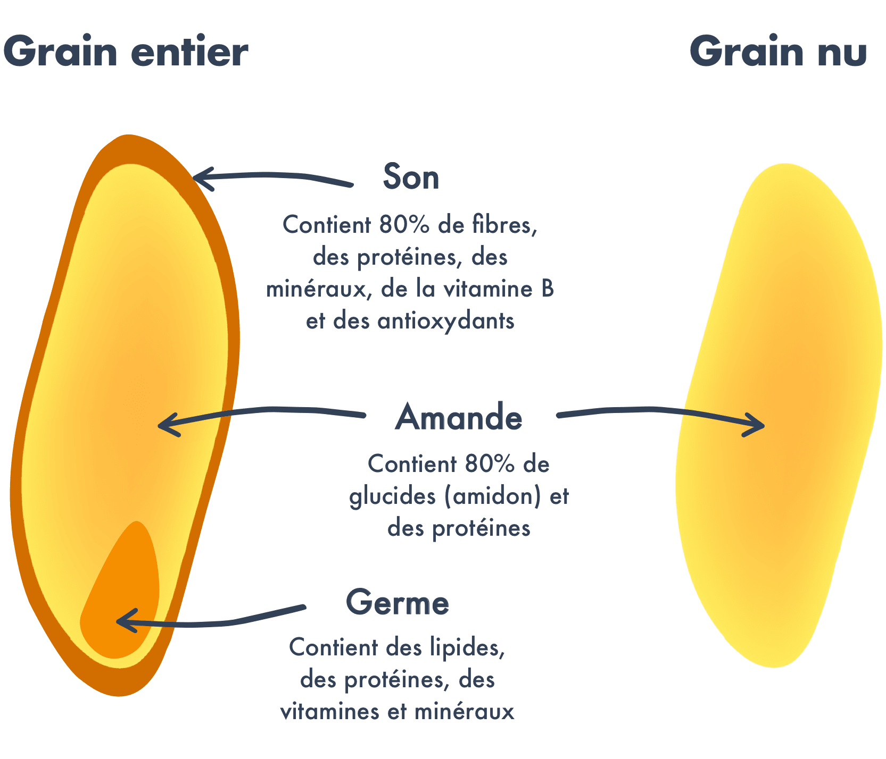
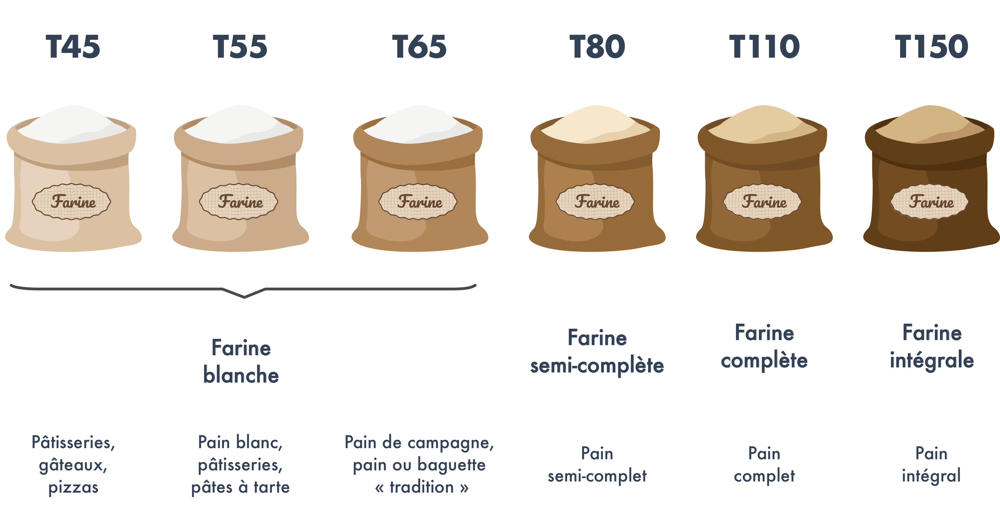
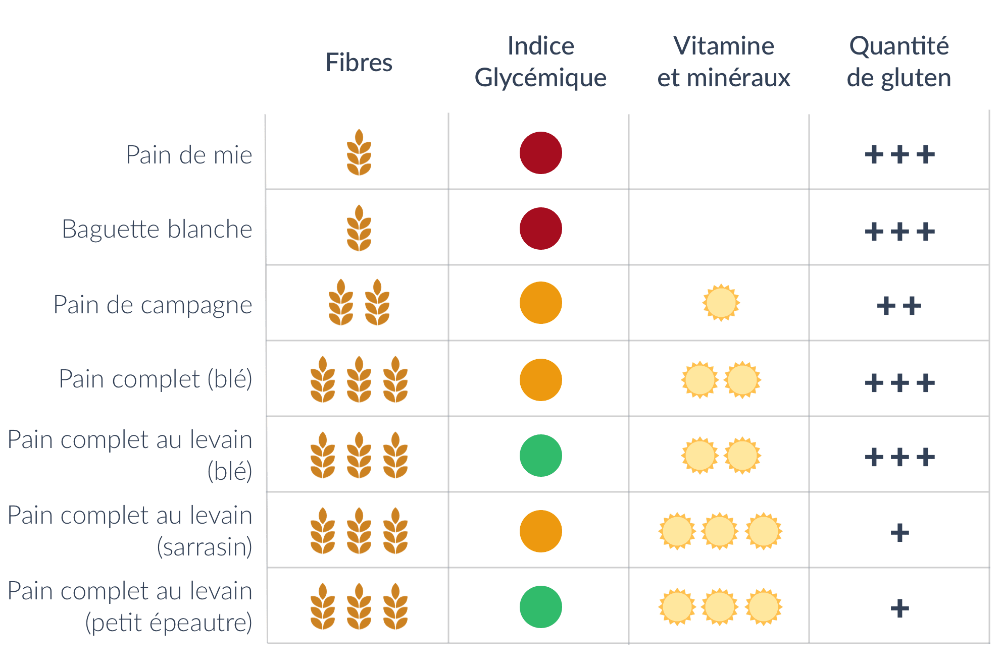

Ah, la France et le pain, une grande histoire d’amour ! Les Français consomment en moyenne 120g par jour soit…44 kgs par an ! Avec une quantité aussi importante, il est donc nécessaire de se poser la question de l’impact du pain sur notre santé afin de choisir le bon type de pain. Avec l’aide du nutritionniste Anthony Berthou, on vous a listé les principaux éléments à regarder pour bien choisir son pain.
Pain blanc ou pain complet ?
Le pain complet est bien plus riche en fibres que le pain blanc. En effet, la farine utilisée pour le pain complet est faite à partir des grains entiers qui conservent leur enveloppe (le son). Or, l’enveloppe est la partie du grain qui contient le plus de fibres. On compte ainsi dans le pain complet environ 2 fois plus de fibres que dans le pain blanc. Or, notre consommation de fibres est souvent insuffisante. Pourtant, les fibres jouent un rôle essentiel afin de réguler notre glycémie (voir notre article sur les glucides), d’éliminer certains éléments toxiques que nous ingérons comme les pesticides et de renforcer notre système immunitaire.
Le pain complet est aussi plus riche en vitamine B et en minéraux (fer, manganèse, magnésium, zinc, sélénium…). Ils sont en effet contenus dans l’enveloppe du grain mais aussi dans le germe qui est détruit lors du processus de raffinage.
Attention cependant : le pain complet est à choisir impérativement bio car l’enveloppe de la graine est la partie qui contient le plus de pesticides.

Le pain blanc, et notamment la baguette, peut par ailleurs contenir de nombreux additifs qui ont pour objectif d’accélérer la fabrication et d’améliorer la conservation. Pour les inconditionnels de la baguette, préférez la baguette tradition car son appellation exige qu’elle ne renferme aucun additif et oblige ainsi les boulangers à utiliser des farines de meilleure qualité pour sa fabrication.
Petit bémol cependant concernant le pain complet : il contient des composés (les phytates notamment) qui limitent l’absorption du calcium et du zinc.
Encore plus riche en fibres et en minéraux que le pain complet, on trouve aussi le pain intégral. Le pain intégral est réalisé avec une farine qui n’a reçu aucun raffinage et qui conserve ainsi l’intégralité des composants de la céréale (la farine utilisée pour le pain complet a quant à elle été légèrement raffinée).
À base de quelle farine ?
Le gluten est ce qui permet l’élasticité d’une pâte. Le problème du gluten réside dans le fait que nos variétés modernes de blé ont subi de nombreux croisements génétiques afin d’augmenter la concentration en gluten du blé et rendre ainsi la pâte plus élastique pour avoir de meilleurs rendements. Notre organisme se retrouve donc à devoir assimiler une quantité beaucoup plus abondante de gluten qu’avant. Or, le gluten contribue à augmenter la perméabilité intestinale : la muqueuse intestinale devient plus perméable et laisse passer des fragments qui n’auraient normalement pas dû passer (voir notre article sur le gluten).
Cela peut alors entraîner des réactions immunitaires et inflammatoires et contribuer aux risques d’apparition de troubles fonctionnels et d’hypersensibilités alimentaires (inconforts digestifs, inflammations intestinales, migraines), voire augmenter le risque de déclenchement d’infections à répétition, de pathologies inflammatoires chroniques ou auto-immunes en cas de prédisposition génétique (eczéma, asthme, sclérose en plaques, polyarthrite rhumatoïde, maladie de Crohn, otites et bronchites à répétition, etc.).
La farine de blé est très riche en gluten, il est donc intéressant de varier les types de farine pour des variétés moins riches en gluten. Une alternative très intéressante est la farine de petit épeautre, qui contient très peu de gluten. L’épeautre est un blé rustique qui a subi peu de transformations. Il est riche en acides gras mono et poly-insaturés, en minéraux et en vitamines (E et B). Par ailleurs, ses protéines contiennent les huit acides aminés essentiels dont le corps a besoin, ce qui est rare pour une céréale. La farine d’épeautre, différente de celle de petit épeautre, est plus riche en gluten et donc un peu moins digeste.
La farine de sarrasin est aussi une alternative intéressante : elle est riche en fibres, en protéines et en antioxydants. Le sarrasin a par ailleurs un effet probiotique : il stimule la flore intestinale et aide ainsi à renforcer le système immunitaire. Seul inconvénient de la farine de sarrasin, elle a un indice glycémique plus élevé. Enfin, vous pouvez aussi opter pour de la farine de seigle. Pauvre en gluten, le seigle est riche en fibres et en antioxydants.
Les farines de quinoa, riz, maïs ou encore châtaigne sont également des alternatives contenant peu ou pas de gluten, mais dont l’intérêt nutritionnel est limité. Le riz est par ailleurs connu pour sa capacité à absorber fortement les substances toxiques (en particulier l’arsenic) et à accumuler les métaux lourds : il est donc fortement recommandé de choisir un pain bio s’il est à base de farine de riz. Les farines de châtaigne et de riz ont par ailleurs un indice glycémique élevé.
Un autre élément à prendre en considération pour la farine est la finesse de raffinage, notamment si vous faites votre pain maison. Elle est indiquée avec la lettre T suivie d’un chiffre. Plus le chiffre est élevé, moins la farine est raffinée. Chaque farine a son propre système de code. Pour la farine de blé, les codes sont les suivants :

Pain à la levure ou au levain ?
La différence entre la levure de boulanger (à ne pas confondre avec la levure chimique utilisée pour faire lever les gâteaux) et le levain réside dans les ferments utilisés.
La levure de boulanger est en réalité un champignon microscopique présenté sous forme sèche ou fraîche, et qui est aussi utilisé pour faire de la bière et du vin. Cette levure permet de produire une fermentation alcoolique rapide, et donc de réduire le temps de fermentation nécessaire pour faire lever la pâte à pain.
À la différence de la levure, le levain provient uniquement des substances présentes naturellement dans la composition du pain. En effet, le levain résulte de la fermentation provoquée par les bactéries présentes sur l’enveloppe du grain de blé. Il va produire une fermentation lactique, beaucoup plus lente que la fermentation alcoolique, ce qui explique sa plus faible utilisation par les boulangeries.
Le pain au levain présente un 1er avantage : il est plus digeste. En effet, les bactéries lactiques formées au cours de la fermentation vont initier le travail d’acidification et donc de digestion. La fermentation va aussi contribuer à dégrader en partie le gluten, qui peut poser des problèmes de digestion. Il est particulièrement conseillé de choisir du pain au levain pour les pains complets qui peuvent être plus difficiles à digérer.
Par ailleurs, l’indice glycémique du pain au levain est plus faible que celui du pain à la levure (voir notre article sur les glucides et l’indice glycémique). Il est d’environ 65 contre plus de 80 pour celui à la levure. Le pain au levain va donc permettre une diffusion plus lente des glucides, et donc limiter les fringales et le stockage des glucides sous forme de graisses.
Enfin, le pain au levain présente aussi un apport plus élevé en vitamines et minéraux. En effet, les vitamines et minéraux du pain sont enfermés dans une molécule appelée l’acide phytique. Cet acide reste intact au cours de la digestion et empêche les vitamines et minéraux de franchir la barrière intestinale pour passer dans notre organisme : ils ne sont donc pas ou peu assimilés. Dans le cas du pain au levain, les bactéries lactiques produites au cours de la fermentation vont permettre de neutraliser l’acide phytique, qui va alors libérer les vitamines et minéraux afin qu’ils soient assimilés par l’organisme.
Tour d’horizon des pains

- CIQAL – https://ciqual.anses.fr/#/aliments/7110/pain-complet-ou-integral-(a-la-farine-t150)
- Fasano. 2011 « Zonulin and Its Regulation of Intestinal Barrier Function: The Biological Door to Inflammation, Autoimmunity, and Cancer ». Physiological Reviews 151-175.
- Hollon et al. 2015. “Effect of gliadin on permeability of intestinal biopsy explants from celiac disease patients and patients with non-celiac gluten sensitivity”. Nutrients 7(3):1565-1577.
- Korem T, Zeevi D, Zmora N, Weissbrod O, Bar N, Lotan-Pompan M, Avnit-Sagi T, Kosower N, Malka G, Rein M, Suez J, Goldberg BZ, Weinberger A, Levy AA, Elinav E, Segal E. Bread Affects Clinical Parameters and Induces Gut Microbiome-Associated Personal Glycemic Responses. Cell Metab. 2017 Jun 6;25(6):1243-1253.e5. doi:10.1016/j.cmet.2017.05.002. PubMed PMID: 28591632.

merci beaucoup pour ces explications très claires
Merci pour ce panorama très clair. Il manque cependant une colonne au tableau, celle du prix moyen au kg pratiqué dans les boulangeries (pas forcément chiffré, 1, 2 ou 3 pièces, par exemple).
Celui du complet/levain/petit épeautre pourrait inciter à consommer moins de pain.
J’aime beaucoup vos conseils
Merci pour cet article clair et bien utile !
Excellent article. Simple et clair. On moins apres l avoir lu on sait où l on va dans nos choix.
Merci.
Bonjour,
J’achète de pain tradition aux gaines…qu’en pensez vous?
Merci pour votre réponse, et….continuez vos articles!!😉💪
Excellent article , merci!
Pour en savoir plus sur les additifs alimentaires : https://www.docteur-fitness.com/additifs-alimentaires
Merci beaucoup pour cette article on y apprend plein de bonnes choses !
Bravo et merci pour tous ces renseignements
Très intéressent, merci beaucoup
Pour faire son pain quelle levure sèche choisir?
Tres interessant cet article sur les farines !
Je fais mon pain aussi
Je cherche une recette pour faire le levain !!!!
Bonsoir !
J’ai réalisé mon premier levain maison à partir d’un blog : « faire son levain avec Djouza »
Bonne boulange !
99
Très intéressant…si j’ai bien compris la meilleure farine pour la santé pour faire son pain est bio integrale au levain T150 …merci pour ces infos tres interessante .
J’ai vu les articles sur le petit déjeuner et le gluten.et comme j’ai vu aussi celui du pain,maintenant je me fais des tartines avec du pain au levain fait avec de la farine de petit épeautre avec de la confiture de fraise fait maison alors que avant je prenait du pain blanc avec de la confiture que j’achetais
Oui mais goût pas terrible.à faire avec un peu de mélange 😊
Très interessant. Quid de la farine de froment ?
Très intéressant. Cela va m’aider à choisir mon pain.
J’ai vu les articles sur le petit déjeuner et le gluten.et comme j’ai vu aussi celui du pain,maintenant je me fais des tartines avec du pain au levain fait avec de la farine de petit épeautre avec de la confiture de fraise fait maison alors que avant je prenait du pain blanc avec de la confiture que j’achetais
Pain au maîs ??
Comment faire un levain avec de la farine de blé noir ? (Sarrasin ) le pain que je fait avec de la levure ne monte pas et est assez dur les jours suivants.
Article très intéressant qui a attisé ma curiosité que les « différentes ouvertures » proposées tout au long de la lecture permet de satisfaire.
Merciiiii !
Merci on y voit plus clair
Bravo à l’équipe
Merci !
Merci pour toutes ces éclaircissements. Par ailleurs, vous dites que le pain de seigle contient peu de gluten et pourtant sur un article précédent, vous affirmez le contraire?????💁🏻♀️
Très intéressant… pour l’instant, j’ai fait du pain avec de la farine de blé T 150 mais avec de la levure chimique « alsacienne « . Est ce pour cela qu’il ne monte pas?
Excellent article!!!!!
7il ne contient pas de gluten donc ne leve pas experience maladie de coelliaque
Désolé je voulais dire moins cher
Bonjour j’aimerais comprendre pourquoi le prix du pain blanc donc plus raffiné,plus de travail + d’additifs ext..est beaucoup plus cher que le pain complet voir l’intégrale et en plus meilleur pour la santé
Bonjour, je voudrais savoir si je pourrais avoir une consommation régulière de flocons d’avoine étant donné que je souffre d’anémie, j’entends dire qu’ils empêcheraient l’absorption du fer dans le sang. Merci de me répondre s’il vous plaît🙏
Bonjour je ne comprends pas dans cet article vous dites le farine de seigle ne contient pas trop de gluten et dans un autre article vous le classez avec les farine qui en contiennent beaucoup??
En attendant votre réponse
Cordialement
I
Je souhaiterai m’abonné a votre revue sur papier? Et régler par chèque ? (0616191191) et reste a votre entière disposition
Super l’idée des explications détaillées
merci beaucoup, on y voit plus clair et vous répondez à plusieurs questions que je me posais et fausses idées aussi !
Bonjour
Pourquoi le pain intégral n’appaurait pas dans le tour d’horIzon des pains?
Dans votre tableau, la baguette tradition est-elle assimilée à « baguette blanche » ?
Merci pour vos articles qui sont tjs très passionnants et qui nous apprennent beaucoup.
J’ai trouvé l’article bien détaillé avec beaucoup d’informations sur les différentes farines, leur qualité nutritionnelle, et le gluten présent ou pas.
Merci à toute l’équipe.
Moi qui est grand/gros consommateur de pain, je comprends mieux ce que je mange. Merci
Excellent article sur le gluten d’une grande lisibilité et un excellent schéma sur les différents pains et leur qualité
Je suis bien informee sur le gluten , son origine et sa dégistion
Merci
Articles vrais et tres intéressants, notre santé dépend de notre alimentation. Le diabète de type2 se soigne totalement par un régime et une alimentation saine sans avoir recours aux médicaments. En changeant ma façon de manger je suis passé de 4,71 gr à 1g en 3mois. Mon médecin m a dit avoir gagné 10 ans de vie.
un grand merci , tres interessant.
Bonjour, j’aurais aimé savoir pourquoi le pain complet est plus difficile à digérer ? En effet vous indiqué: »Il est particulièrement conseillé de choisir du pain au levain pour les pains complets qui peuvent être plus difficiles à digérer. »
Merci pour cette article
Très intéressant, Je ne savais pas tout
Très intéressant et enrichissant.
Beaucoup de personnes après lecture se pencheront sur leur alimentation. Merci
Merci pour vos articles, qui apprennent beaucoup sur l’alimentation et donnent des pistes pour se nourrir plus sainement.
Merci beaucoup pour ces articles très intéressants et très utile pour la santé !
Bon courage !
Super et instructive….. Clair et net grand merci a tte l’équipe.
Bonjour article très intéressant qui m’a beaucoup éclairé sur le gluten. Je vais sûrement changer ma façon de consommer du pain et choisir un pain plus sain merci et prenez soin de vous
Merci de nous éclairer sur tous ces produits. Car on est vraiment perdu dans ce mode de consommation actuel.
Merci beaucoup pour toutes ces informations qui vont nous permettre de mieux choisir notre pain.
Article super interressant merci pour ce moment au plaisir de vous relire
Article très intéressant. C’est toujours un plaisir de vous lire. Continuez comme ça.
MERCI JULIE pour vos articles clairs et précis.Il est toujours intéressant de lire.
MERCI également pour votre application qui nous aide à mieux consommer.
Je vous souhaite une belle soirée et continuer à nous renseigner sur notre alimentation.
GISOU
Merci pour votre article sur le pain et le gluten ainsi que le tableau sur différentes farines .. le tout très intéressant
Merci pour vos articles très clairs et très complets !
Article très complet. Excellente documentation. Et j’adore le dessin de la 1ère Page. Tellement joyeux !
Article vraiment intéressant qui nous en dit plus sur le pain, et surtout sur le gluten, merci pour ce moment .
Bonjour,
Merci pour toutes ces informations rédigées très clairement.
Pour compléter votre tableau intitulé « Tour d’horizon des pains » pourriez-vous ajouter une ligne ou deux : pain intégral et pain intégral au levain.
Merci par avance.
Meilleures salutations
Quel indice pour le pain de campagne grillé ?
Bonjour, qu’en est il sur le pain à la farine de Khorosan ? Merci.
Merci beaucoup pour ces informations très intéressantes et importantes .continuez à nous éclairer et surtout prenez soin de vous .
J’ai téléchargé votre application et j’en suis contente. A chaque fois que je me rends dans un magasin alimentaire et ou cosmétique, j’utilise l’application et je dois bien vous avouer que cela m’a été utile.
Quel est le meilleur pain sans gluten ?votre application m est très utile y compris en cosmétique je réalise des économies. Un grand merci